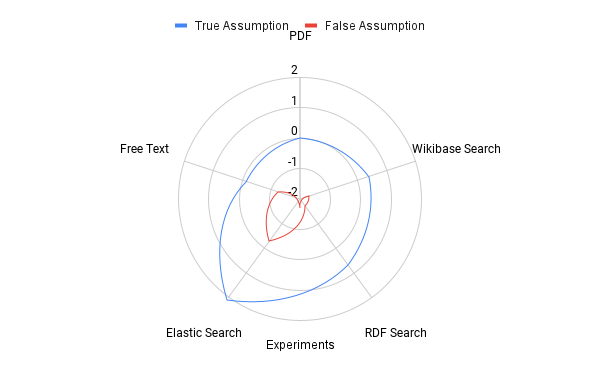

Searching for domain specific information is tough
Searching through files is taxing as user needs to refer multiple sources
Different solutions have been implemented with various techniques
Parallely, Semantic Web has emerged.
Research Questions
How can we have a uniform structured representation for documents of various types?
How to evaluate search for information?
Can or should we combine various search techniques for one unique solution method?
Contribution
Wikibase Infrastructure
We introduce an Infrastructure for Valorising Documents with Wikibase.
Evaluation
Search Techniques Experiment
We undertook a search technique experiment for searching for information in a particular domain. The information
was to be searched with 5 methods,
Searching with a PDF viewer
Searching over Wikibase
Searching over Structured Data
Elastic Search over Documents
Free-Text search over Documents
Search Techniques Experiment (Contd.)
Evaluation Techniques
We invited experimental subjects to search for information using different search
techniques. We prepared a questionnaire
for each search method which were divided into two parts,
Search Instruction Questionnaire
User Experience Questionnaire
There were 17 experimental subjects, 6 questions (5 true and 1 false) to search for and 1 UEQ questionnaire to be
filled for each search method
Search Techniques Experiment (Contd.)
Search Instruction Questionnaire
The users had to search for information in 2 minutes and note the relevancy of the
information retreived
on a scale of 1 to 7 (the higher the better), if they found an answer and the timestamp in seconds if they found
the answer.
The questions answered from this experiment is,
Did the user find an answer?
What was the time taken through each method?
Which method had the most relevant answers?
Search Techniques Experiment (Contd.)
Search Instruction Questionnaire (Contd.)
The user is expected to form his own keywords and questions to search
for the answer by reading the instructions.
We introduced a question with no answer present in the document corpus to count for false positives.
The instructions were,
No.
Instruction to User
Answer available?
1
Find text about the racism faced by black feminists
Yes
2
Find text about elitism in american womens movement
Yes
3
Find text about human rights of minors
No
4
Find text about racism in United States
Yes
5
Find text about ableism in prison
Yes
6
Find text about police violence for disabled people
Yes
Search Techniques Experiment (Contd.)
User Experience Questionnaire
The users had to fill a questionnaire explaining their user experience after
every
search method.
The questionnaire contains 26 individual items divided into 6 subscales (Attractivenness, Perspicuity,
Efficiency, Depandability, Stimulation and Novelty)
The questions answered from this experiment are,
What does the user feel about the usefullness of the method? i.e Pragmatic
What does the user feel about the ease of use of the method? i.e Hedonic
Results
Search Methods

Values of relevant answer from a search method